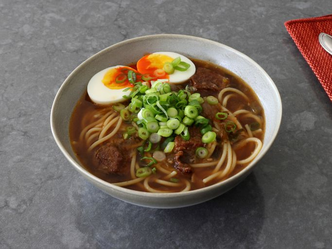

This is my take on yakamein (New Orleans-style noodle soup) that's famous only locally, but is one soup you'll want to know about. Known in New Orleans as a very effective hangover cure—its nickname is Old Sober—it is also a beautifully comforting and delicious thing to eat.
| Prep Time: | Cook Time: | Stand Time: |
|---|---|---|
| 20 mins | 1 hr 20 mins | 20 mins |
| Servings: | Total Time: | |
| 4 | 2 hrs |
Yakamein might be the best noodle soup you’ve never heard of (which is very unusual for a recipe from New Orleans). Classic dishes from The Big Easy are known and loved all over the world, but Yakamein is more of a local secret. I don’t think it’s intentional, since I’ve been to New Orleans and the folks down there really want you to know about and enjoy all their food — but for whatever reason, it’s just not popular outside of Louisiana. Hopefully, this video helps change that — at least for you.
Besides being an incredibly delicious thing to eat, this simple soup is supposed to be an effective hangover cure, which explains its nickname, “Old Sober.” Although, I’ve never tested its effectiveness since I haven’t had a really bad hangover in a very long time. In fact, I think the last one was in New Orleans. I don’t recommend starting an evening there with three Sazeracs. Ouch. Anyway, whether you use it to cure a hangover, or you just want a big, beautiful, steaming bowl of noodle soup, I really do hope you give this a try soon. Enjoy!
Place beef pieces into a bowl and add salt, black pepper, cayenne pepper, and paprika. Toss very thoroughly until meat is evenly coated. Let sit at room temperature for about 20 minutes before browning, or place in the fridge until needed.
Add oil to a heavy-bottomed pot, and heat on high until oil is shimmering. Add beef in a single layer, and sear until a nice brown crust forms, 3 to 5 minutes.
Turn beef over, and let other side cook about 2 minutes. The second side will not brown like the first, but that’s okay. Turn heat down to medium-high; remove beef to a bowl and set aside.
Add onions, celery, peppers, and minced garlic to the pot, and cook, stirring, until onions begin to turn translucent, 3 to 5 minutes.
Add beef back in along with any accumulated juices. Add soy sauce, Worcestershire sauce, granulated garlic, water, and beef bouillon paste. Stir and wait for soup to come to a simmer. Lower heat to medium-low and simmer until the meat is very tender, 60 to 90 minutes.
Before serving, taste and adjust with more salt or soy if needed. Keep soup on low heat until ready to serve.
Bring a large pot of lightly salted water to a boil. Cook spaghetti in the boiling water, stirring occasionally, until tender, about 12 minutes. Drain, and divide evenly between 4 large soup bowls.
--------------------------------------------------------
If preparing noodles ahead of time, cook until tender, drain, and rinse under cold water. Drain well, and toss noodles with a little vegetable oil to prevent sticking. Noodles can be held at room temperature until soup is ready
Reheat refrigerated noodles in the microwave for 1 minute, or add to a mesh strainer and dunk into hot soup, then divide into serving bowls.
Cooked noodles can be added directly to the finished soup to reheat, but then even portioning is much harder.
--------------------------------------------------------
Ladle hot soup over noodles, and garnish each bowl with a hardboiled egg, hot sauce, and sliced green onions.